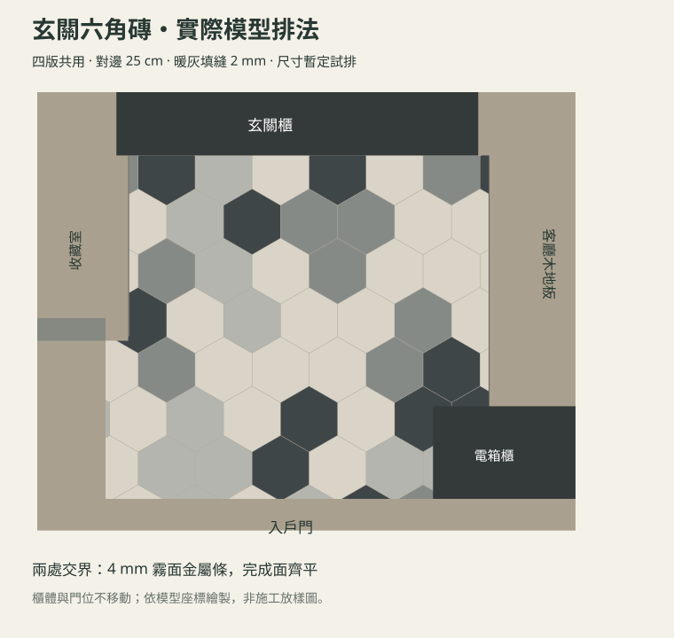
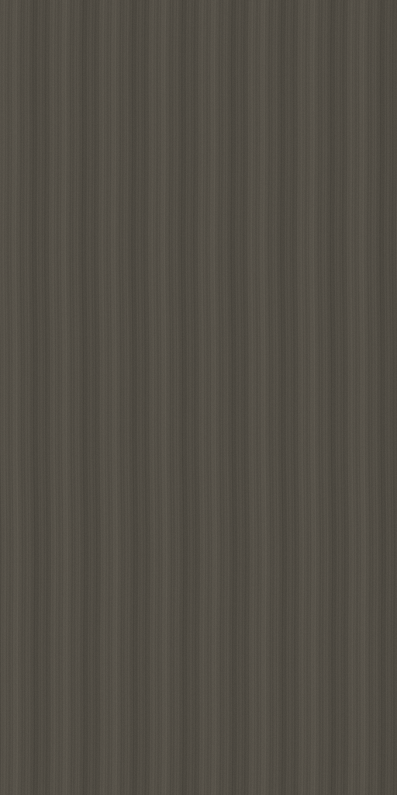
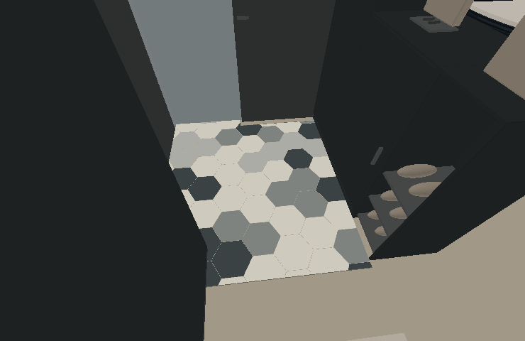
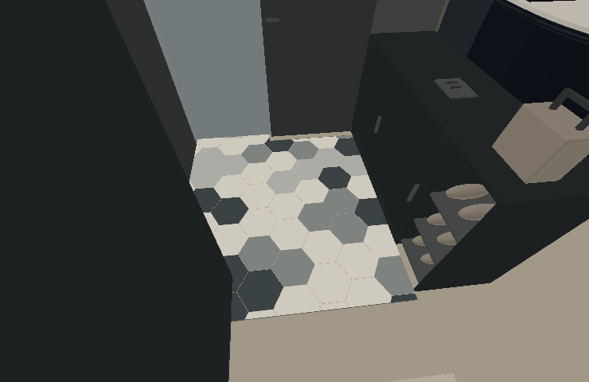
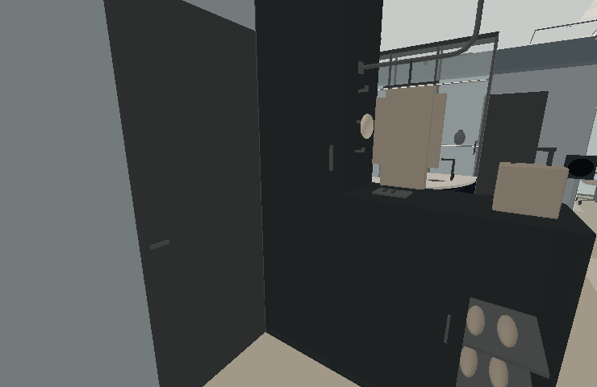
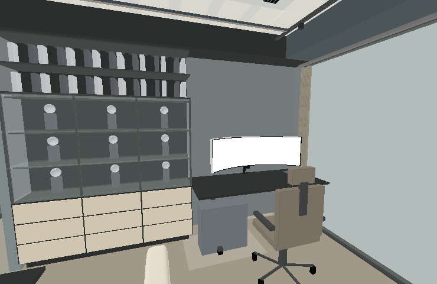

W 夢想之家 · 2026-09-10 · V1–V4 共用材質混色六角磚，搭配深灰棕直紋木櫃
依你提供的兩張照片調整：玄關用米白、灰階六角磚，木色櫃面改成低彩度深灰棕、細直紋霧面木皮。客廳保留暖棕人字拼木地板。

實際模型磚片投影。櫃體遮住的部分保留地坪；排磚不延伸至客廳。
從模型實際程式材質輸出的木紋色樣，未加燈光；非品牌實物色票。本次套用內容
暖米白淺灰中灰炭灰
| 位置 | 調整後 |
|---|
| 玄關地坪 | 六角磚對邊 25 cm、2 mm 暖灰填縫；依房間邊界逐片裁切，尺寸暫定試排。 |
| 客廳／收藏室交界 | 4 mm 霧面金屬細收邊；磚與木地板完成面齊平。 |
| 木色櫃面 | 冰箱旁圓弧頂天櫃、主臥床頭木抽屜、書房九抽門片，同步改深灰棕直紋木皮。 |
| 其他材質 | 書桌檯面、黑框玻璃、玄關石墨灰板件、收藏室淺灰內側、旋轉電視金屬背殼維持原設計。 |
玄關模型配色檢視

V1／V3 高矮櫃搭配
V2／V4 矮櫃搭配四版共 10,240 個地坪射線取樣通過：玄關木地板已挖除，磚面與兩處收邊沒有高低差；四版的排磚與 14 片木色櫃面材質一致。圖為實際模型離線配色檢視，不含木地板貼圖、反射與真實光照；瀏覽器最終光影尚未驗收。
展開調整前後模型配色比較
玄關地坪

調整前 調整後 · 離線模型配色圖
調整後 · 離線模型配色圖書房木色抽屜

調整前 調整後 · 離線模型配色圖
調整後 · 離線模型配色圖